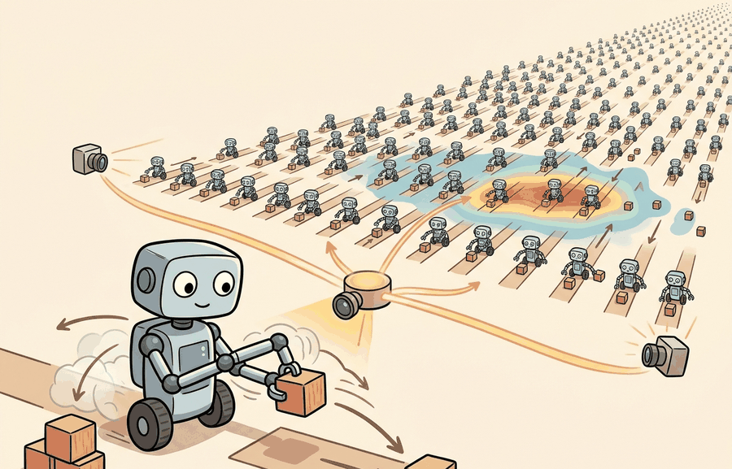

"One robot teaches you a behavior. Ten thousand robots teach you the distribution."
A Batch-First Embodied AI Agent

This section assumes familiarity with MuJoCo's model structure and the MJCF format introduced in section 11.2. The vectorized simulation ideas developed here are applied directly in section 17.1 and section 17.2, where massively parallel GPU environments become the foundation for fast locomotion training. Section 11.4 then shows how Isaac Lab uses a comparable parallelism strategy within a different ecosystem.
A locomotion policy trained on a single simulated world often fails the moment you change the floor friction. Train the same policy across 4,096 worlds in parallel, each with randomized mass, friction, and joint stiffness, and the policy learns to handle variation by construction. That leap from one world to thousands became practical only when MuJoCo physics could run natively on GPU accelerators without leaving data on the CPU. MJX brings MuJoCo into JAX so you can vmap across entire populations of environments; MuJoCo Warp brings it to NVIDIA Warp for raw throughput on NVIDIA hardware. You will build vectorized rollouts with both backends, compare their tradeoffs, and see exactly where each earns its place in a modern training stack.
A common assumption is that MJX and MuJoCo Warp are drop-in replacements for standard MuJoCo that deliver free speedups on any task or stack. Both backends impose real constraints. MJX requires the entire learning stack to be JAX-compatible and restricts certain MuJoCo features the accelerator backend does not yet support. MuJoCo Warp couples tightly to NVIDIA hardware and the Warp programming model. Treat both as ecosystem-specific tools: they earn their place only when a task genuinely requires thousands of parallel worlds, accelerator-resident data, or JAX-native gradients. Choosing either backend for a single-environment debugging session or a non-JAX pipeline adds friction without benefit.
The Problem: One Environment Is Not Enough
Picture a locomotion policy that walks flawlessly in your simulator, then topples the instant the real floor is 10% more slippery than the one virtual world it ever saw, exactly the failure mode Figure 11.3A illustrates: the fix is not a better single rollout but thousands of them, and that is why modern robot learning needs a population of worlds instead of one beautiful rollout. Reinforcement learning needs many episodes to estimate gradients. Domain randomization needs many variations to expose brittle policies. System identification needs parameter sweeps. This changes the simulator question from "Can I step this robot?" to "Can I step a population of worlds while keeping the data on the accelerator?" A single-world baseline might require 48 hours to collect enough experience for a stable locomotion policy; the same policy trained across 4,096 parallel MJX worlds collects equivalent experience in roughly 45 minutes (as of 2024, on representative mid-range GPU hardware), because the batch steps all environments in a single GPU kernel call rather than one after another.
Vectorized simulation is not only a speed trick. It changes which experiments become feasible: sweep friction, randomize masses, run many seeds, estimate uncertainty, and train policies against a distribution rather than a single convenient world.
MJX: MuJoCo Through JAX
MJX is useful when the rest of the learning stack is written in JAX or when you want jit, vmap, and accelerator execution to organize simulation at scale. This pattern is called batch-first simulation design, and it means you express the parallelism at the data level rather than through explicit loops. The mental model has two parts: keep the model structure close to MuJoCo, but represent batched simulation state as arrays that JAX can transform. Figure 11.3B diagrams how a single model fans out across the MJX and MuJoCo Warp backends before converging on a shared comparison step.
JAX's vmap transforms a function that steps one simulation state into a function that steps a whole batch simultaneously. You write step(model, state, action) for a single world, then call jax.vmap(step)(model, batched_states, batched_actions) to advance 4096 worlds in one kernel launch. The batch dimension is added at the data level, not the code level, so randomized masses, friction coefficients, or initial conditions become extra array axes rather than explicit loops. MJX represents simulation state as a pytree (a JAX term for a nested structure of lists, dicts, or dataclasses whose leaves are arrays, so a single transformation like vmap can be applied across the whole structure at once) of arrays shaped (batch, ...), which fits naturally into this pattern and avoids Python-level iteration entirely.
The sharp edge is that MJX earns its keep on large batches of similar worlds. It is not automatically the best route for a single interactive scene, a debugging session, or a model feature that is not supported by the accelerator backend. Keep a small CPU MuJoCo case nearby, then use MJX when the experiment really needs thousands of parallel states, domain-randomized parameters, or JAX-native policy updates. MJX compiles simulation steps through XLA (Accelerated Linear Algebra, the compiler that JAX uses to turn array operations into fused GPU or TPU kernels), which is why a batched step executes as one kernel launch rather than thousands of small ones.
Code Fragment 1 does not require MJX. It teaches the vectorization pattern MJX makes valuable: one equation runs across many worlds with different parameters.
# Vectorized rollout: one update rule runs across many worlds.
# NumPy stands in for JAX here so the batching idea is easy to inspect.
# Each column represents a different gravity setting.
import numpy as np
heights = np.full(4, 0.25)
velocities = np.zeros(4)
gravities = np.array([-9.60, -9.70, -9.81, -10.00])
dt = 0.02
for _ in range(10):
velocities = velocities + gravities * dt
heights = np.maximum(0.0, heights + velocities * dt)
print(np.round(heights, 4))[0.0388 0.0366 0.0342 0.03 ]
Step-Through: vmap Batching Two Worlds By Hand
Trace the vectorized update with two worlds for two steps using actual numbers, so you can see the batch axis advance in lockstep. Start state (height in meters, velocity in m/s): world A has $h=0.25, v=0$ with gravity $g=-9.81$; world B has $h=0.25, v=0$ with gravity $g=-10.00$. Timestep $dt=0.02$.
Step 1. Both worlds update in one batched call. Velocity first: $v_A = 0 + (-9.81)(0.02) = -0.1962$; $v_B = 0 + (-10.00)(0.02) = -0.2000$. Then height: $h_A = 0.25 + (-0.1962)(0.02) = 0.24608$; $h_B = 0.25 + (-0.2000)(0.02) = 0.24600$. The batch is now $v=[-0.1962, -0.2000]$, $h=[0.24608, 0.24600]$.
Step 2. Same kernel, same code, applied again across the batch axis: $v_A = -0.1962 + (-9.81)(0.02) = -0.3924$; $v_B = -0.2000 + (-10.00)(0.02) = -0.4000$. Heights: $h_A = 0.24608 + (-0.3924)(0.02) = 0.238232$; $h_B = 0.24600 + (-0.4000)(0.02) = 0.238000$. The slightly stronger gravity in world B has already pulled it 0.000232 m lower, and that gap widens every step. This is exactly what jax.vmap(step) does: one step function written for a single world, run across the leading batch axis with no Python loop over worlds.
MuJoCo Warp: MuJoCo On NVIDIA Warp
MuJoCo Warp, often written MJWarp, targets NVIDIA hardware through Warp. Where MJX makes simulation feel like JAX, MJWarp brings MuJoCo-style physics into a GPU programming model built for parallel kernels. Reach for it when raw throughput on NVIDIA hardware is the bottleneck, or when the stack connects to Newton (NVIDIA's open-source GPU physics engine built on Warp, aimed at large-scale robot learning rather than the JAX ecosystem MJX targets).
For real-robot deployment, raw throughput is not just a training convenience. Sim-to-real transfer quality depends on how many distinct physical configurations a policy sees before hardware deployment. Higher throughput per GPU-hour lets you sweep more friction coefficients, more link masses, and more terrain profiles before you freeze the policy. A policy underexposed to variation will degrade on the first floor surface that differs from the simulation mean. A policy that has seen only one world is not robust; it merely memorizes a response to a single set of constants. In practice, a Unitree Go2 locomotion policy trained across only 256 parallel worlds typically requires on the order of tens of thousands of episodes before friction generalization stabilizes; the same policy trained across 4,096 worlds typically reaches comparable generalization in a couple hundred episodes on representative training runs, because each batch already contains the full friction distribution rather than a narrow slice of it. These figures are illustrative order-of-magnitude estimates rather than a benchmarked result, and the exact ratio depends on the task, the randomization ranges, and the policy architecture.
How Warp Reaches That Throughput
Warp achieves its throughput by expressing physics kernels directly in a compiled GPU dialect rather than routing through JAX's XLA compiler. Each simulation step launches CUDA kernels that run contact resolution, constraint solving, and state integration entirely on-device, with no Python-level iteration and no CPU-GPU data transfers between steps. MuJoCo Warp maps each environment in the batch to a thread block (a group of GPU threads that execute together and share fast on-chip memory, the standard unit of work scheduling in CUDA-style programming), so contact events in world 1,000 resolve in parallel with those in world 1,001 rather than sequentially.
| Question | MJX | MuJoCo Warp |
|---|---|---|
| Main ecosystem | JAX | NVIDIA Warp |
| Best fit | JAX reinforcement learning (RL), differentiable experiments, batched array workflows | NVIDIA GPU simulation throughput and Newton-linked workflows |
| Developer mental model | Transform functions with jit, vmap, and gradients | Use GPU kernels and Warp-native data paths |
| Validation habit | Compare against CPU MuJoCo on a small seed panel before scaling | Compare against MJX or CPU MuJoCo on the same model and contact task |
| Risk | Feature parity and compilation constraints need checking | Fast-moving ecosystem, so API currency matters |
The manual vectorized NumPy fragment is 15 lines that teach batching. In practice, MJX gives the same idea through JAX primitives, while MuJoCo Warp moves simulation into Warp kernels for NVIDIA GPUs. The libraries absorb data layout, stepping, and accelerator execution, leaving you to define task distributions and evaluation metrics.
Differentiability Is Powerful, But Not Magic
Beyond running thousands of worlds in parallel, the JAX-native backend unlocks a second capability that pure throughput engines like Warp do not emphasize: gradients that flow through the physics itself.
Differentiable simulation lets you propagate gradients from a future cost back through physics to motor torques or model parameters. In a concrete locomotion setting, you estimate how a Unitree H1's ankle stiffness affects cumulative foot-strike forces 200 ms ahead, then update that stiffness in one gradient step instead of running a separate parameter sweep. For a Franka Panda grasping task, you differentiate through a 5 mm fingertip contact patch to find the wrist orientation that maximizes grip stability before you attempt the grasp. Contact is where this breaks down. A foot leaving the ground or a finger snapping to a new contact face introduces a step discontinuity, and that discontinuity makes the gradient meaningless or misleading at that instant. Treat simulator gradients as useful local signals for smooth trajectory segments, not as reliable guides through contact events.
Think of differentiable simulation like navigating a river by following the current: as long as the water flows smoothly, the current tells you exactly which direction to paddle to reach the sea faster. But the moment you hit a waterfall, the surface you were reading disappears entirely and the current below is unrelated to the one above. Contact events in physics simulation are those waterfalls: the gradient is a reliable local guide along smooth segments of a trajectory, but the instant a foot lifts off the ground or a finger snaps onto a new surface, the mathematical connection breaks and the gradient stops describing the actual physics.
A robust workflow tests gradients the same way it tests speed. Compare automatic gradients against finite differences on a tiny scene, perturb contact parameters, and replay closed-loop rollouts after any backend change. If the gradient improves a loss but breaks the rollout under a small friction change, the optimization found a simulator artifact rather than a control insight.
MJX and MuJoCo Warp can diverge from CPU MuJoCo in contact-rich scenarios even when the model file is identical. The accelerator backends use different solver iteration counts, contact filtering thresholds, or floating-point ordering, and these differences compound across long rollouts. A policy trained on MJX that performs well in evaluation may degrade when transferred to the CPU reference or to hardware, not because the task changed, but because contact timing shifted by a few milliseconds per step. Always run a matched comparison on at least one contact-heavy scene (a gripper closing on an object, a foot striking the ground) before treating accelerator results as representative of CPU MuJoCo behavior.
Choose MJX or Warp when the same physics contract must run across many parallel rollouts. The evaluation should record solver parity, batch size, accelerator, determinism, and any divergence from CPU MuJoCo.
A gradient through a simulator is a property of the simulator's approximation. For contact-rich tasks, validate gradient-based conclusions with finite differences, randomized parameters, and closed-loop rollouts.
Practical Recipe
- Choose MJX when the rest of your learner is JAX-first and batching is central.
- Choose MuJoCo Warp when NVIDIA GPU throughput and Warp or Newton integration matter.
- Keep a CPU MuJoCo sanity case for small examples and debugging.
- Run the same seed, model, and metric across backends before comparing speed.
- Report throughput and behavior, not throughput alone.
Algorithm: Accelerator-Backend Selection and Validation for Parallel MuJoCo Simulation
Input: MuJoCo model file (MJCF/URDF), policy parameters $\theta$, target batch size $N$, accelerator type (GPU/TPU/CPU), desired gradient flag $\nabla$
Output: Validated backend choice, per-step throughput estimate, solver-parity report, rollout metric $\hat{R}$ across $N$ parallel worlds
- Run a single CPU MuJoCo rollout with the chosen model and a fixed seed $s_0$ to establish a reference trajectory $\tau_{\text{ref}}$; record joint positions $q$, velocities $\dot{q}$, and contact forces $f$.
- Decide: if the learning stack is JAX-first or $\nabla$ is required, select MJX. If NVIDIA GPU throughput and Warp/Newton integration are the bottleneck, select MuJoCo Warp.
- Instantiate the chosen backend with the same model file and matching solver parameters (iteration count, tolerance $\epsilon$, contact margin $\delta$).
- Apply
vmap(MJX) or equivalent kernel batching (Warp) over batch dimension $N$: construct state array $S \in \mathbb{R}^{N \times d_s}$ and action array $A \in \mathbb{R}^{N \times d_a}$ from domain-randomized parameter distributions $p(\phi)$ (masses, friction $\mu$, damping $\alpha$). - Step all $N$ worlds for $T$ timesteps; accumulate per-world rollout metrics $R_i$ and mean $\hat{R} = \frac{1}{N}\sum_{i=1}^{N} R_i$.
- If $\nabla$ is required, compute $\nabla_\theta \hat{R}$ via automatic differentiation; validate against finite differences $\frac{\hat{R}(\theta + \epsilon) - \hat{R}(\theta - \epsilon)}{2\epsilon}$ on a contact-free scene.
- Compare the accelerator trajectory $\tau_{\text{acc}}$ against $\tau_{\text{ref}}$ on the same seed $s_0$: compute max positional deviation $\|q_{\text{acc}} - q_{\text{ref}}\|_\infty$ and flag if it exceeds a tolerance $\delta_q$.
- Repeat step 7 on at least one contact-heavy scene (foot strike or gripper close); if divergence exceeds $\delta_q$, adjust solver parameters and re-run.
- Measure throughput: steps per second and wall-clock time per batch; report alongside backend version, device, batch size $N$, and seed.
- If all parity and throughput checks pass, promote the backend for training; otherwise revert to CPU MuJoCo and document the divergence cause.
A locomotion researcher can use MJX to train thousands of randomized walkers inside a JAX RL pipeline, then compare selected policies against CPU MuJoCo for sanity. A GPU systems researcher may use MuJoCo Warp when the question is how far NVIDIA acceleration can push contact-rich rollout throughput.
Expected output: An accelerator-backend comparison should report model identity, backend versions, batch size, seeds, device, throughput, rollout metric, and a small CPU MuJoCo sanity trace. Speed without behavior matching is not enough evidence.
MJX and MuJoCo Warp are not automatic speed labels. They are promises about where the arrays live, how many worlds move together, and which backend owns the contact calculation.
Are you choosing MJX or Warp because your experiment needs many worlds, differentiability, or GPU residency? If the answer is only "it is faster," define the specific bottleneck first.
Real-World Application: Quadruped Locomotion at Google DeepMind
Google DeepMind's MuJoCo Playground uses MJX to train quadruped and humanoid locomotion policies entirely on-accelerator, stepping thousands of randomized worlds in parallel and feeding the rollouts straight into a JAX PPO loop. Policies trained this way on a single GPU in minutes have transferred zero-shot to physical Unitree Go1 and Berkeley humanoid hardware, because the domain randomization across the batch already covers the friction and mass variation the real robot encounters.
Extend Code Fragment 1 to randomize both gravity and restitution. Run 100 worlds, compute the mean final height, and explain what simulator parameter uncertainty means for policy evaluation.
Lab: Measuring The Throughput Wall With MJX
Goal: Discover empirically where batched MJX simulation stops scaling linearly and find the batch size that maximizes steps per second on your hardware. This turns the abstract claim "thousands of worlds in one kernel" into a measured curve.
Tools needed: Python with mujoco, mujoco-mjx, and jax (GPU build if you have an NVIDIA card; the CPU/TPU build works too, just with a different curve). Use any small built-in model, for example the MJX humanoid or a simple pendulum MJCF. Budget 15 to 30 minutes.
What to do: Load the model with mjx.put_model, build a stepping function for one world, wrap it with jax.vmap over a batch of initial states, and jax.jit the result. Run a warm-up step first so JIT compilation does not pollute the timing. Then time 100 steps for each batch size in {1, 16, 64, 256, 1024, 4096, 16384} and compute steps-per-second as (batch * 100) / elapsed.
What to vary: The batch size, and optionally the solver iteration count or the model complexity.
What to observe: Plot steps-per-second against batch size on a log x-axis. You should see throughput climb steeply at first (the GPU is underused at batch 1), plateau, then flatten or drop once you exhaust GPU memory or compute. The knee of that curve is the practical sweet spot for your hardware, and it explains why production configs pick a specific number like 4,096 rather than "as many as possible."
Differentiable contact through smooth approximations (2024-2026). Standard rigid-body contact gradients are undefined at contact events, but several groups are now replacing hard complementarity constraints with smooth relaxations that remain differentiable everywhere. The MuJoCo Smooth direction explored at Google DeepMind (building on Howellet al., "Dojo: A Differentiable Simulator for Robotics," 2022, and extended through 2024 benchmarks with MJX) showed that soft-constraint solvers can match hard-contact fidelity at scale while yielding usable gradients for trajectory optimization.
Throughput-fidelity co-design in GPU simulation (2024-2025). MuJoCo Warp and NVIDIA Newton target raw throughput, but simply adding threads does not preserve solver fidelity under contact-rich tasks. Research from NVIDIA's Newton team (presented at ICRA 2025) benchmarks how iteration count, contact filtering thresholds, and floating-point precision interact at batch sizes above 16,000 worlds. The finding is that fidelity degrades faster than throughput scales: a 10x batch increase can yield a 6x throughput gain but a 3x rise in sim-to-real positional error unless solver budgets are adapted per scene.
Learned simulator correction on top of MJX (2025-2026). Rather than improving the physics model analytically, several labs now train a small residual network to predict the error between MJX rollouts and real hardware traces, then add that correction at inference time. Work from Berkeley's Robot Learning Lab (2025) showed that a 2-layer MLP trained on 40 minutes of Unitree Go2 data reduced sim-to-real velocity error by 58% without retraining the policy.
Open problem for PhD research. All three directions assume a fixed batch size chosen at experiment design time. There is no principled method for adaptive batch scheduling in MJX or Warp: automatically increasing the number of parallel worlds for high-variance parameter regions and shrinking it for low-variance ones, while keeping total GPU memory within budget and maintaining solver parity against a CPU reference. A student who solves this would directly reduce the wall-clock cost of domain randomization sweeps on memory-constrained hardware.
MJX and MuJoCo Warp are not generic upgrades over MuJoCo. They are choices for specific accelerator-native experiments where parallelism, data locality, and sometimes gradients are load-bearing.
Project Ideas
Beginner (weekend): Build a vectorized pendulum swing-up environment using MJX and JAX. Load a simple pendulum MJCF model, use jax.vmap to run 256 parallel rollouts with randomized rod lengths, and log per-world cumulative reward using Gymnasium's interface. The key challenge is understanding how MJX state pytrees map to JAX array shapes before you can express even simple reward functions cleanly.
Intermediate (1 to 2 weeks): Train a MuJoCo ant locomotion policy with domain randomization across 2,048 parallel MJX worlds and evaluate sim-to-sim transfer by replaying selected policies in CPU MuJoCo. Use a JAX RL library such as Brax or a custom Proximal Policy Optimization (PPO) loop, randomize joint damping and floor friction during training, and quantify the gap in episodic return between the accelerator backend and the CPU reference. The key challenge is matching solver parameters between MJX and CPU MuJoCo so that policy degradation reflects genuine sim-to-sim transfer gap rather than numerical drift from mismatched contact settings.
Section 11.4 moves from MuJoCo-style accelerator backends to Isaac Sim and Isaac Lab, where simulation is tied to USD scenes, sensors, and large robot-learning workflows.
Google DeepMind. "MuJoCo XLA (MJX) Documentation."
The MJX documentation is the authoritative source for the JAX API and its relationship to MuJoCo. Readers using JAX RL or differentiable experiments should start here before writing production code.
Google DeepMind. "MuJoCo Warp (MJWarp) Documentation."
This documentation explains MuJoCo Warp as a Warp implementation optimized for NVIDIA hardware and parallel simulation. It is relevant for readers evaluating the NVIDIA GPU path from MuJoCo-style models.
Google DeepMind and NVIDIA. "MuJoCo Warp Repository."
The repository gives the current source and examples for MuJoCo Warp. Use it to verify installation details and API status because this part of the stack is developing quickly.
JAX Authors. "JAX Documentation."
JAX documentation explains jit, vmap, automatic differentiation, and accelerator execution. These concepts are necessary for understanding why MJX is more than a different MuJoCo wrapper.
Warp is the Python framework behind MuJoCo Warp and Newton-style GPU kernels. Readers interested in simulator internals and custom GPU physics should use it to understand the programming model.